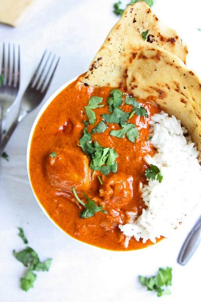

Indian butter chicken

Description
This easy Indian butter chicken recipe makes Indian food a synch! This
creamy tomato sauce is similar to chicken tikka masala, but maybe even
better!
Ingredients
- 4 tbsp. butter
- 900g-1kg chicken thighs
- 1 onion, diced
- 3 garlic cloves, minced
- 1 ½ tbsp. garam masala
- 1 ½ tbsp. fresh grated ginger
- 1 ½ tsp. chili powder
- 1 ½ tsp. ground cumin
- ½-1 tsp. cayenne pepper
- 1 can (400g) crushed tomatoes
- 2 ½ dl heavy cream
- 1 ½ dl water
- Salt & black pepper
- Lime & cilantro, for garnish
- Naan & rice, for serving
Steps
- Using 2 tablespoon of butter in a large skillet over medium-high heat,
brown the pieces of the chicken so each side is browned. They do not need
to be fully cooked all the way through. Work in batches, and set aside
when you're done.
- Melt another 2 tablespoon of butter in the pan over medium heat. Add
the onion, and cook until beginning to soften — about three minutes. Add
the garlic, garam masala, ginger, chili powder, cumin, and cayenne. Stir
to combine, and cook for about 45 seconds before adding the tomato sauce.
- Bring the mixture to a simmer and let cook for five minutes before
adding the cream & water. Bring the mixture back to a simmer, add the
browned chicken, and let simmer for 10-15 minutes. Keep the heat low here
— not a rolling boil.
- Stir in the remaining 2 tablespoon of butter, and season with salt
and pepper, to taste.
- Serve garnished with lime and cilantro, alongside rice and naan.